Radial¶
Module focused on the implementation of the Radial Basis Functions interpolation technique. This technique is still based on the use of a set of parameters, the so-called control points, as for FFD, but RBF is interpolatory. Another important key point of RBF strategy relies in the way we can locate the control points: in fact, instead of FFD where control points need to be placed inside a regular lattice, with RBF we hano no more limitations. So we have the possibility to perform localized control points refiniments. The module is analogous to the freeform one.
| Theoretical Insight: | |
|---|---|
As reference please consult M.D. Buhmann, Radial Basis Functions, volume 12 of Cambridge monographs on applied and computational mathematics. Cambridge University Press, UK, 2003. This implementation follows D. Forti and G. Rozza, Efficient geometrical parametrization techniques of interfaces for reduced order modelling: application to fluid-structure interaction coupling problems, International Journal of Computational Fluid Dynamics. RBF shape parametrization technique is based on the definition of a map, 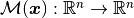, that allows the possibility of transferring data across non-matching grids and facing the dynamic mesh handling. The map introduced is defines as follows 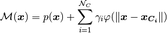 where 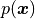 is a low_degree polynomial term, 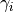 is the weight,
corresponding to the a-priori selected 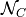 control points, associated to the
The matrix version of the formula above is: 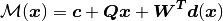 The idea is that after the computation of the weights and the polynomial terms from the coordinates of the control points before and after the deformation, we can deform all the points of the mesh accordingly. Among the most common used radial basis functions for modelling 2D and 3D shapes, we consider Gaussian splines, Multi-quadratic biharmonic splines, Inverted multi-quadratic biharmonic splines, Thin-plate splines and Beckert and Wendland 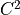 basis all defined and implemented below. |
|
 -th basis function, and 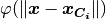
a radial function based on the Euclidean distance between the control points position
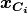 and 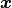. A radial basis function, generally, is
a real-valued function whose value depends only on the distance from the origin, so that
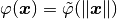.
-th basis function, and 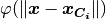
a radial function based on the Euclidean distance between the control points position
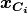 and 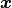. A radial basis function, generally, is
a real-valued function whose value depends only on the distance from the origin, so that
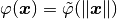.RBF._distance_matrix |
This private method returns the following matrix: |
RBF._get_weights |
This private method, given the original control points and the deformed ones, returns the matrix with the weights and the polynomial terms, that is  , 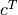 and 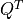. , 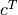 and 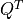. |
RBF.beckert_wendland_c2_basis |
It implements the following formula: |
RBF.gaussian_spline |
It implements the following formula: |
RBF.inv_multi_quadratic_biharmonic_spline |
It implements the following formula: |
RBF.multi_quadratic_biharmonic_spline |
It implements the following formula: |
RBF.perform |
This method performs the deformation of the mesh points. |
RBF.thin_plate_spline |
It implements the following formula: |
-
class
RBF(rbf_parameters, original_mesh_points)[source] Bases:
objectClass that handles the Radial Basis Functions interpolation on the mesh points.
Parameters: - rbf_parameters (RBFParameters) – parameters of the RBF.
- original_mesh_points (numpy.ndarray) – coordinates of the original points of the mesh.
Variables: - parameters (RBFParameters) – parameters of the RBF.
- original_mesh_points (numpy.ndarray) – coordinates of the original points of the mesh. The shape is n_points-by-3.
- modified_mesh_points (numpy.ndarray) – coordinates of the points of the deformed mesh. The shape is n_points-by-3.
- bases (dict) – a dictionary that associates the names of the basis functions implemented to the actual implementation.
- weights (numpy.matrix) – the matrix formed by the weights corresponding to the a-priori selected N control points, associated to the basis functions and c and Q terms that describe the polynomial of order one p(x) = c + Qx. The shape is (n_control_points+1+3)-by-3. It is computed internally.
Example: >>> import pygem.radial as rbf >>> import pygem.params as rbfp >>> import numpy as np
>>> rbf_parameters = rbfp.RBFParameters() >>> rbf_parameters.read_parameters('tests/test_datasets/parameters_rbf_cube.prm')
>>> nx, ny, nz = (20, 20, 20) >>> mesh = np.zeros((nx * ny * nz, 3)) >>> xv = np.linspace(0, 1, nx) >>> yv = np.linspace(0, 1, ny) >>> zv = np.linspace(0, 1, nz) >>> z, y, x = np.meshgrid(zv, yv, xv) >>> mesh = np.array([x.ravel(), y.ravel(), z.ravel()]) >>> original_mesh_points = mesh.T
>>> radial_trans = rbf.RBF(rbf_parameters, original_mesh_points) >>> radial_trans.perform() >>> new_mesh_points = radial_trans.modified_mesh_points
-
_distance_matrix(X1, X2)[source] This private method returns the following matrix: 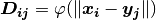
Parameters: - X1 (numpy.ndarray) – the vector x in the formula above.
- X2 (numpy.ndarray) – the vector y in the formula above.
Returns: matrix: the matrix D.
Return type:
-
_get_weights(X, Y)[source] This private method, given the original control points and the deformed ones, returns the matrix with the weights and the polynomial terms, that is
, and .
The shape is (n_control_points+1+3)-by-3.Parameters: - X (numpy.ndarray) – it is an n_control_points-by-3 array with the coordinates of the original interpolation control points before the deformation.
- Y (numpy.ndarray) – it is an n_control_points-by-3 array with the coordinates of the interpolation control points after the deformation.
Returns: weights: the matrix with the weights and the polynomial terms.
Return type:
-
static
beckert_wendland_c2_basis(X, r)[source] It implements the following formula:
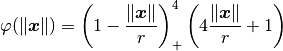
Parameters: - X (numpy.ndarray) – the vector x in the formula above.
- r (float) – the parameter r in the formula above.
Returns: result: the result of the formula above.
Return type:
-
static
gaussian_spline(X, r)[source] It implements the following formula:
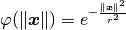
Parameters: - X (numpy.ndarray) – the vector x in the formula above.
- r (float) – the parameter r in the formula above.
Returns: result: the result of the formula above.
Return type:
-
static
inv_multi_quadratic_biharmonic_spline(X, r)[source] It implements the following formula:
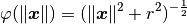
Parameters: - X (numpy.ndarray) – the vector x in the formula above.
- r (float) – the parameter r in the formula above.
Returns: result: the result of the formula above.
Return type:
-
static
multi_quadratic_biharmonic_spline(X, r)[source] It implements the following formula:
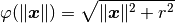
Parameters: - X (numpy.ndarray) – the vector x in the formula above.
- r (float) – the parameter r in the formula above.
Returns: result: the result of the formula above.
Return type:
-
perform()[source] This method performs the deformation of the mesh points. After the execution it sets self.modified_mesh_points.
-
static
thin_plate_spline(X, r)[source] It implements the following formula:
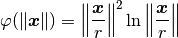
Parameters: - X (numpy.ndarray) – the vector x in the formula above.
- r (float) – the parameter r in the formula above.
Returns: result: the result of the formula above.
Return type: